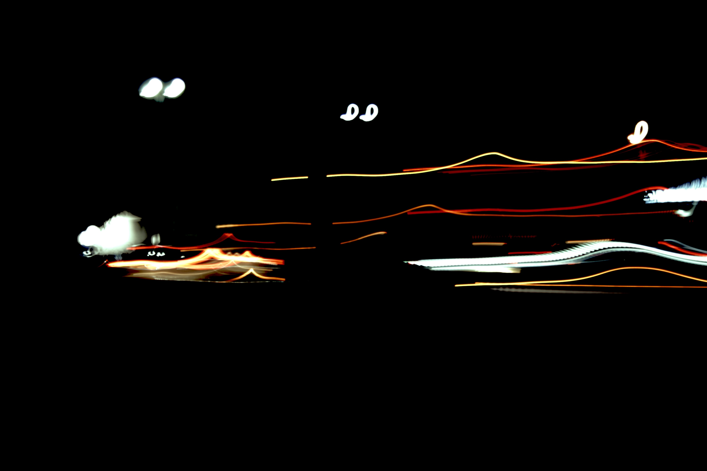

Deconstruction of image
Metamorphosis
Used primarily as a reference source for other projects, this image explores the concept of metamorphosis through the lens of photography. The image captures the transformation of everyday objects and scenes, highlighting the beauty and complexity of change. Using a street picture taken on a Canon EOS 20-D with Auto-Depth of Field mode and shaky hands, the image was transformed into an abstract composition through careful manipulation of shadows and saturation. The result is something unrecognizable of it's original form whilst maintaining it's essence.